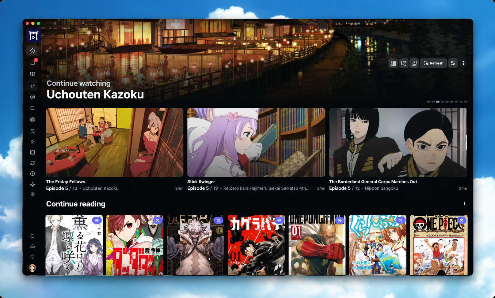

Tori is a self-hosted media server with a web interface, desktop app, and mobile companion — for managing your local library, streaming anime, and reading manga, all on your own terms.

No strict naming conventions, no walled garden — just your library, organized and playable anywhere.
Fast, smart scanning of local files without strict naming conventions or folder structures.
Browse and manage your lists, discover anime and manga, and keep your progress in sync.
Built-in torrent search via extensions, with support for qBittorrent, Transmission, and debrid services.
Stream torrents directly without waiting for downloads, or watch via online-source extensions.
Stream your library to any device with on-the-fly transcoding or direct play, hardware-accelerated.
Read chapters from your local library or via extensions with a unified reading interface.
In-app repository for installing and managing extensions — streaming, manga, and torrent sources.
Access your anime and manga library without an internet connection.
Display your watching activity automatically, right from your Discord profile.
Run the server on your desktop, then reach it from anywhere with Tori Tenji.
Desktop client for Windows, macOS, and Linux with a built-in libmpv-based player.
Companion app for iOS and Android — browse, stream, and read on the go, online or offline.
Access your full library from any browser, whether you're on your own network or remote.